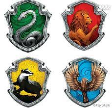

Harry Potter é uma das maiores franquias de livros e filmes da história com mais de 600 milhões de cópias vendidas. A série tem milhões de fãs ao redor do mundo. Esse site é justamente feito para esses fãs, contendo detalhes sobre a série, como personagens, teste das casas, etc.
A série é composta por 7 livros:
Harry Potter e a Pedra Filosofal
Harry Potter e a Câmara Secreta
Harry Potter e o Prisioneiro de Azkaban
Harry Potter e o Cálice de Fogo
Harry Potter e a Ordem da Fênix
Harry Potter e o Enigma do Príncipe
Harry Potter e as Relíquias da Morte
Sucesso
Como dito na introdução, Harry Potter é um grande sucesso, com milhares cópias dos livros vendidas e recordes de bilheteria no cinema. Aqui temos uma tabela das vendas dessas cópias e bilheterias dos filmes e livros:
Sucesso de Harry Potter
Livro/Filme
Cópias Vendidas
Bilheteria
Harry Potter e a Pedra Filosofal
107 mi
US$ 1,024 bi
Harry Potter e a Câmara Secreta
60 mi
US$ 875 mi
Harry Potter e o Prisioneiro de Azkaban
55 mi
US$ 790 mi
Harry Potter e o Cálice de Fogo
55 mi
US$ 887 mi
Harry Potter e a Ordem da Fênix
55 mi
US$ 940 mi
Harry Potter e o Enigma do Príncipe
65 mi
US$ 929 mi
Harry Potter e as Relíquias da Morte Parte 1
50 mi
US$ 955 mi
Harry Potter e as Relíquias da Morte Parte 2
US$ 1,332 bi
Total
447 mi
US$ 7,732 bi
Personagens
Harry Potter é uma saga com personagens extremamente cativantes, desde os protagonistas aos personagens secundários. Todos tem histórias importantes e algum papel na trama principal, alguns deles são:
Protagonistas
Harry Potter
Hermione Granger
Rony Weasley
Alunos de Hogwarts
Luna Lovegood
Gêmeos Weasley
Gina Weasley
Simas Finnigan
Dino Thomas
Cedrico Diggory
Cho Chang
Draco Malfoy
Vicente Crabbe
Gregorio Goyle
Professores
Albus Dumbledore
Minerva McGonnagal
Filius Flitwick
Pomona Sprout
Severo Snape
Sibila Trelawney
Vilões
Lord Voldemort
Bellatriz Lestrange
Lucius Malfoy
Teste das Casas de Hogwarts
As casas são algo muito importante dentro do universo de Harry Potter, são a forma como a escola de Hogwarts é dividida. São quatro casas: Grifinoria, Sonserina, Corvinal, Lufa-Lufa.

Casas de Hogwarts
Para definir quem é de cada casa é levado em conta as características da pessoa. Grifinórios são conhecidos pela coragem, sonserinos pela ambição, corvinos pela inteligência e lufanos pela lealdade. Abaixo temos um teste para você descobrir a sua casa de Hogwarts:
Vídeo para entender um pouco mais sobre as casas de Hogwarts: